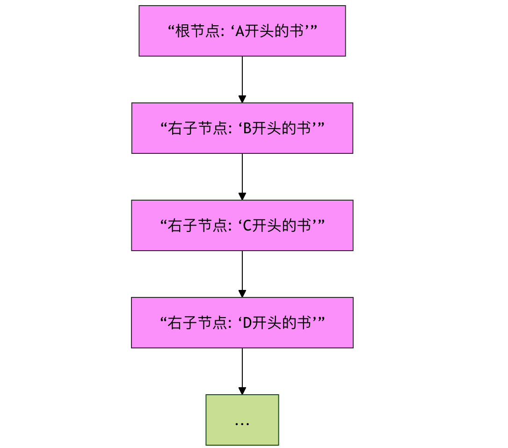
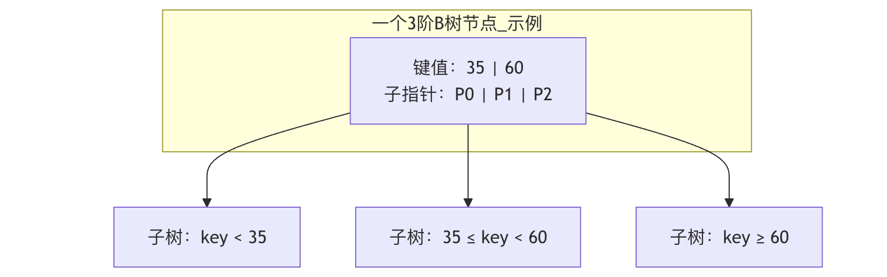
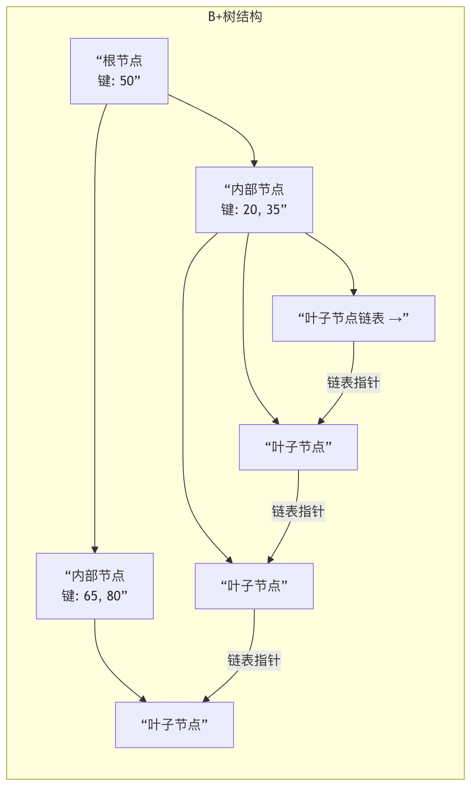

高度なツリー構造
二分木、二分探索木などの基本的なツリー構造を習得した後、私たちはより広く、より効率的な領域——高度なツリー構造へと足を踏み入れようとしています。
基本的なツリーがデータ構造の世界における普通の道路だとするなら、高度なツリー構造は精巧に設計された高速道路やインターチェンジのようなものです。それらは巧妙な平衡規則と記憶戦略によって、データ量が膨大である場合や操作が頻繁な場合でも、優れた性能を維持できるようにしています。
この章では紹介しますAVLツリー、赤黒ツリー、Bツリー 和 B+ツリーこの4つの古典的な高度なツリー構造を紹介します。
なぜ高度なツリー構造が必要なのか？
深く学ぶ前に、まず一つの疑問を抱きます：効率的な二分探索木（BST）があるのに、なぜもっと複雑なツリーが必要なのでしょうか？
想像してみてください。あなたは図書館を持っており、BSTを使って書名の順に本を整理しています。もしアルファベット順に一冊ずつ挿入していくと（例えば：A..., B..., C...）、このツリーは一本の鎖（連結リストに似たもの）に退化してしまいます。このとき、一冊の本を探す時間は理想的なO(log n)から最悪のO(n)へと悪化し、効率が極めて低くなります。

図：二分探索木が整列されたデータを挿入する際に連結リストへ退化する様子を示す模式図。検索性能が低下します。
高度なツリー構造（自己平衡ツリー）は、まさにこの問題を解決するために生まれました。それらはノードを挿入または削除する際に、自動的にツリーの形を調整し、バランスを保ちます。これにより、検索、挿入、削除などの操作の時間計算量が常にO(log n)のレベルに維持されることを保証します。
AVLツリー：高さバランスの守護者
AVLツリーは最も早く発明された自己平衡二分探索木であり、発明者であるAdelson-VelskyとLandisの名前にちなんで名付けられました。
AVLツリーの中核的な考え方は非常に単純です：ツリー内の任意のノードについて、その左部分木と右部分木の高さの差が1を超えてはなりません。。
中核概念：平衡因子（バランスファクター）
各ノードには平衡因子（バランスファクター）があり、その計算式は次のとおりです：平衡因子 = 左部分木の高さ - 右部分木の高さAVLツリーでは、各ノードの平衡因子は -1、0、または1のみです。
不均衡と回転による調整
ノードを挿入または削除した後、あるノードの平衡因子が2または-2になると、ツリーは不均衡になります。バランスを回復するために、AVLツリーは4つの回転操作によって調整します：
- 左回転：「右-右」の不均衡なケースを処理します。
- 右回転：「左-左」の不均衡なケースを処理します。
- 左右回転：最初に左回転し、次に右回転して、「左-右」の不均衡なケースを処理します。
- 右左回転：最初に右回転し、次に左回転して、「右-左」の不均衡なケースを処理します。
例
def __init__(self, key):
self.key = key
self.height = 1 # ノードの高さ、初期値は1
self.left = None
self.right = None
def get_height(node):
"""ノードの高さを取得（空のノードを処理）"""
return node.height if node else 0
def get_balance_factor(node):
"""ノードの平衡因子を計算"""
if not node:
return 0
return get_height(node.left) - get_height(node.right)
def right_rotate(y):
"""
yを根とする部分木に対して右回転を行う
y x
/ \ / \
x T4 右回転 (y) z y
/ \ - - - - - - - -> / \ / \
z T3 T1 T2 T3 T4
/ \
T1 T2
"""
x = y.left
T3 = x.right
# 回転を実行
x.right = y
y.left = T3
# 高さを更新（最初にyの高さを更新し、次にxの高さを更新する必要がある）
y.height = 1 + max(get_height(y.left), get_height(y.right))
x.height = 1 + max(get_height(x.left), get_height(x.right))
# 新しい根ノードを返す
return x
# 左回転関数は右回転と対称なので、ここでは詳細な実装を省略
def left_rotate(x):
"""xを根とする部分木に対して左回転を行う（論理は右回転と対称）"""
pass
AVLツリーの特徴まとめ
| 特徴 | 説明 |
|---|---|
| 厳密なバランス | 平衡条件が厳格（高さの差≤1）で、ツリーの高さが最もlog nに近く、検索性能が非常に優れています。 |
| 調整が頻繁 | 挿入/削除後、バランスを回復するために下から上へ複数回の回転が必要になる場合があります。 |
| 適用シーン | 適しているのは検索が多く、追加・削除が少ないシーンです。例えば、データベースインデックスの中間層やメモリ内のルックアップテーブルなどです。 |
赤黒ツリー：工学的実践の王者
赤黒ツリーは別の自己平衡二分探索木であり、AVLツリーの基盤の上にいくつかの「妥協」を行っています。AVLツリーのように絶対的なバランスを追求するのではなく、より緩やかな一連の規則によって大まかなバランスを保証し、挿入/削除時の回転回数を減らし、全体的な性能においてより良い工学的実践効果を達成しています。JavaのTreeMap、TreeSetと C++ STL のmap、set基盤となる実装には赤黒ツリーが使用されています。
赤黒ツリーの5つの中核規則
赤黒ツリーは、ノードに色属性（赤または黒）を追加し、以下の規則を守ることでバランスを維持します：
- 各ノードは赤か黒のどちらかです。
- 根ノードは黒です。。
- すべての葉ノード（NIL空ノード）は黒です。
- 赤いノードの2つの子ノードは黒でなければなりません。（つまり、連続する赤いノードがあってはなりません）。
- 任意のノードからその各葉ノードまでのすべての経路には、同数の黒いノードが含まれます。
規則4と5は赤黒ツリーのバランスの鍵です。規則5により、どの経路も他の経路の2倍以上長くなることはなく、それによって大まかなバランスが実現されます。
挿入時の調整戦略
新しいノードを挿入するとき、常にまずそれを赤色に着色します（規則5に違反しないようにするため）。これが衝突を引き起こした場合（主に規則2または規則4への違反）、変色和回転によって調整する必要があります。調整の中核となる考え方は、衝突（赤色）をツリーの根に向かって「上へ移動」させ続け、変色または回転によって解決できるようにすることです。
例
RED = "RED"
BLACK = "BLACK"
def __init__(self, key):
self.key = key
self.color = self.RED # 新しいノードは初期状態で赤色
self.left = None
self.right = None
self.parent = None # 赤黒ツリーは親ノードへのポインタが必要
def insert_fixup(tree, node):
"""挿入後に赤黒ツリーの性質を修復する（簡略化された論理説明）"""
while node.parent and node.parent.color == RBNode.RED:
# ケース1：おじノードが赤色 -> 再着色
# ケース2 & 3：おじノードが黒色 -> 回転と再着色で解決
# ... (具体的な実装は多数のポインタ操作を伴うため、ここでは論理的な説明のみ)
pass
tree.root.color = RBNode.BLACK # 根ノードが黒であることを保証
赤黒ツリー vs AVLツリー
| 特性 | AVLツリー | 赤黒ツリー |
|---|---|---|
| 平衡基準 | 厳格（高さの差≤1） | 緩やか（色の規則によって大まかなバランスを保証） |
| 検索性能 | より優れている（ツリーがよりバランスが取れている） | やや劣るが、それでも O(log n) |
| 挿入/削除 | 場合によってはより多くの回転が必要 | 回転回数が少なく、効率が高い |
| 適用シーン | 頻繁な検索が必要なシーン | 総合的な性能要求が高いシーン、例えば言語の標準ライブラリやファイルシステム |
BツリーとB+ツリー：ディスクストレージのエンジン
データ量が大きすぎてすべてをメモリに読み込めない場合、ディスク上に保管する必要があります。ディスクI/O（読み書き）速度はメモリアクセスよりもはるかに遅いです。BツリーとB+ツリーは、ディスクI/Oの回数を減らすために設計された多路平衡探索木であり、データベースやファイルシステムのインデックスに広く使用されています。
Bツリー：平衡多路探索木
Bツリーは、1つのノードに1つのデータと2つのポインタだけを格納するものではありません。m次のBツリーのノードは以下の特性を持ちます：
- 各ノードは最大でm個の子ノードを持つ。
- 根でも葉でもない各ノードは少なくとも⌈m/2⌉個の子ノードを持つ。
- 根ノードは少なくとも2つの子ノードを持つ（それ自体が葉ノードでない限り）。
- すべての葉ノードは同じ階層にあります。
- 非葉ノードがk個の子ノードを持つ場合、それはk-1個のキーを含み、これらのキーは部分木の値の範囲を分割します。

図：3次のBツリーノードの構造模式図。2つのキーと3つのポインタを含み、データ範囲を3つの区間に分割します。
Bツリーの利点低くて太いツリー形状にある。1つのノードが複数のキーを格納でき、複数の子ノードを持てるため、ツリーの高さが大幅に低くなる。データを検索する際に、ロードする必要のあるディスクページ（ノード）の数が減り、効率が向上する。
B+ツリー：Bツリーの進化版
B+ ツリーは B ツリーを基に重要な改良を加えたもので、現代データベースインデックスの事実上の標準。
B+ツリーとBツリーの核心的な違い：
- データの格納位置：B+ ツリーでは、すべてのデータレコード（またはレコードを指すポインタ）はリーフノードのみに格納される。内部ノード（非リーフノード）はキーのみを格納し、ルーティングに使用する。
- リーフノードのリンクリスト：すべてのリーフノードはポインタによって連結され、順序付けられた双方向リンクリストを形成する。

図：B+ ツリーの模式図。データはリーフノードのみにあり、リーフノードが順序付きリンクリストを形成することに注意。
B+ツリーの大きな利点
| 利点 | 説明 |
|---|---|
| より安定したクエリ効率 | どの検索も必ずリーフノードまで到達する必要があり、経路の長さが同じため、性能が安定している。 |
| より高い空間効率 | 内部ノードはデータを格納しないため、より多くのキーを収容でき、ツリーが低くなり、I/O が減少する。 |
| 強力な範囲検索 | リーフノードのリンクリストを通じて、効率的にWHERE age BETWEEN 20 AND 30このような範囲検索を実行できる。一方、B ツリーでは複雑な中間順走査が必要である。 |
| ディスクの先読みにより適している | ディスクはページ（ブロック）単位で読み書きされる。B+ ツリーのノードは通常、ちょうど1ページ分のサイズに設計されており、1回の I/O でより多くのキーをロードでき、I/O をさらに削減できる。 |
まとめ
この4つの高度なツリー構造を表で振り返ってみましょう：
| ツリー構造 | 核心的な目標 | 重要な特性 | 代表的な用途 |
|---|---|---|---|
| AVL ツリー | 究極のクエリ速度 | 高さが厳密にバランスされ、回転調整が頻繁に行われる | メモリ内で高速検索が必要な場面 |
| 赤黒ツリー | 総合的な性能バランス | 色のルールによっておおまかにバランスを保ち、追加・削除の効率が高い | 言語標準ライブラリ（Map/Set）、プロセススケジューリング |
| B ツリー | ディスク I/O の削減 | 多方向バランス、データは内部ノードに格納可能 | 初期のファイルシステム、一部のデータベースインデックス |
| B+ ツリー | データベースインデックスの最適化 | データはリーフのみに格納され、リーフがリンクリストを形成し、範囲検索に強い | 現代のリレーショナルデータベース（MySQL、PostgreSQL）のインデックス |
クリックしてノートを共有
<p style="font-size:14px;">ノートは本記事の内容の拡張である必要があります！</p><br> <p style="font-size:12px;"><a href="../tougao.html" target="_blank">記事の投稿は、こちらをクリック</a></p> <p style="font-size:14px;"><a href="../w3cnote/runoob-user-test-intro.html" target="_blank">登録招待コードの取得方法</a></p> <h3 class="text-muted"><i class="fa fa-info-circle" aria-hidden="true"></i> ノートを共有する前に<a href=";.html" class="runoob-pop">ログイン</a>が必要です！</h3> <p><a href="../w3cnote/runoob-user-test-intro.html" target="_blank">登録招待コードの取得方法</a></p>